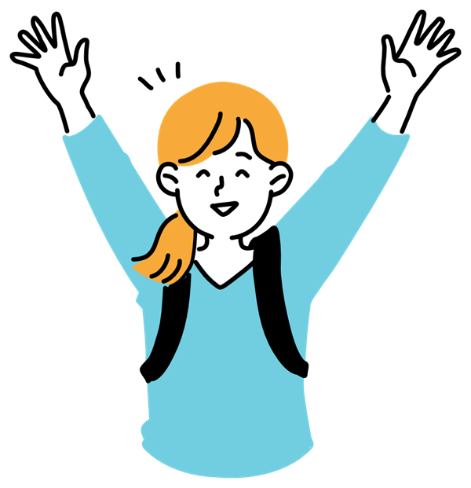

トップ
›
入試・出願情報
ADMISSIONS
入試・出願情報
出願スケジュール、手続きの流れ、必要書類、試験当日の準備をまとめました。日程や条件は大学・入試方式ごとに異なるため、必ず各大学の募集要項をご確認ください。

SCHEDULE
入試方式別 出願スケジュール
{{ t.label }}
{{ schedNote }}
※日程はサンプルです。
{{ s.no }}
{{ s.label }}
{{ s.when }}
出願手続きの流れ
{{ f.no }}
{{ f.t }}
{{ f.d }}
DOCUMENTS
主な出願書類
書類
一般
推薦
総合
{{ d.n }}
{{ d.a }}
{{ d.b }}
{{ d.c }}
◯＝多くの大学で必要 △＝大学により必要 ー＝通常不要（一般的な傾向のサンプルです）
CHECKLIST
試験当日の持ち物チェック
{{ c.mark }}
{{ c.t }}
{{ checkCount }}